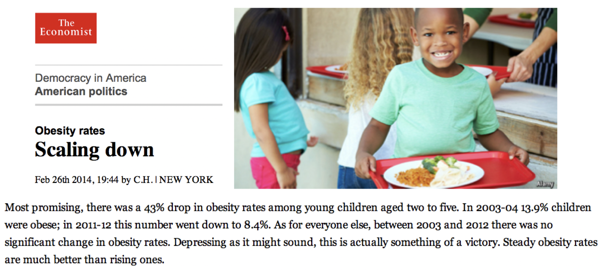

Hypothesis Testing
Samuel Burer
Last updated: September 17, 2018
Thought Experiment
You flip a coin 10 times, and it comes up Heads all 10 times. Will the next flip be Heads or Tails?
Introduction to Hypothesis Testing
Innocent Until Proven Guilty
- In our judicial system, a person is innocent until proven guilty
- I.e., evidence is required to prove guilt beyond a reasonable doubt
- Otherwise, innocence is assumed
Hypothesis Testing
Often, you’d like to test a hypothesis about a population by taking a sample of size \(n\)…
- Has customer approval changed since the new billing system was implemented?
- Is the proportion of out-of-tolerance piston-bore pairs less than 5%?
- Has the average elementary school teacher’s salary increased, decreased, or stayed the same since 5 years ago?
- Does gender have an impact on salary?
- Is the number of violent crimes (per 100,000 residents) higher in Iowa or Minnesota?
Today, we will only talk about testing hypotheses involving means and proportions.
But basic ideas apply in other situations, too (as we will see in later classes)
Example
Customer satisfaction at your company has been steady at 75% during the past several years
New techniques to (hopefully) improve customer service have been implemented recently
You’d like to know if customer satisfaction has actually increased.
So you take a survey…
Consider the following scenarios:
- Survey reports a 95% CI of 76% \(\pm\) 2%
- Survey reports a 95% CI of 78% \(\pm\) 2%
True customer satisfaction could still be 75% (since 75% is in CI), i.e., we are still unsure whether satisfaction has increased
True customer satisfaction is more than 75% (since 75% is below CI), i.e., we are confident that satisfaction has increased
Important point!
- In scenario #2, the probability of an error is less than 5%
Hypothesis Testing (cont’d)
Steps of Hypothesis Testing
- Formulate a hypothesis to test
- Specify an acceptable level of risk for making an error
- Determine the criterion upon which final conclusion will be based
- Collect data by taking a sample
- Determine whether or not to accept the hypothesis as true
Step 1
Formulate a hypothesis to test
The alternative hypothesis \(H_1\) is a hypothesis about the population that we would like to investigate (“guilty”)
The null hypothesis \(H_0\) is a statement about the status quo that is assumed correct (“innocent”)
The two hypotheses \(H_0\) and \(H_1\) are MECE (mutually exclusive and collectively exhaustive)
In our previous example:
- \(H_0 : p \le 0.75\)
- \(H_1 : p > 0.75\)
- The number “0.75” is called the hypothesis constant
- The letter “\(p\)” is called the population parameter
We will discuss three different situations:
\(H_0 : \text{param} \le \text{hc}\) with \(H_1 : \text{param} > \text{hc}\)
\(H_0 : \text{param} = \text{hc}\) with \(H_1 : \text{param} \ne \text{hc}\)
\(H_0 : \text{param} \ge \text{hc}\) with \(H_1 : \text{param}\) < \(\text{hc}\)
These are called one-sample tests (both one- and two-sided, or \(one-\) and \(two-tailed\))
There are also two-sample tests, but they are out of scope
- Defining the null and alternative can be tricky
- Two rules of thumb
- If you are making a claim, then the claim should define the alternative
- Whatever will cause action should define the alternative
- No substitute for practice and experience
Examples
Our current light bulb lasts an average of 959 hours. We have developed a new light bulb that we hope lasts longer than the current one
Let \(\mu\) be the mean burning time of the new light bulb
Then our hypotheses are:
\[ H_0 : \mu \le 959 \ \ \ \ \ \ \ \ H_1 : \mu > 959 \]
In a certain manufacturing process, it is important to produce a part as close as possible to 1 inch long. A little less or a little more is okay, but a significant difference from 1 inch can cause trouble.
Let \(\mu\) be the mean length of the manufactured part
\[ H_0 : \mu = 1.0 \ \ \ \ \ \ \ \ H_1 : \mu \ne 1.0 \]
(see Excel examples)
Hypothesis Testing (cont’d)
Step 2
Specify an acceptable level of risk for making an error
- Our risk is the probability of making a Type I error
- We specify the highest risk we can tolerate
- This is called the level of significance
- Denoted by \(\alpha\) (“alpha”)
- \(1 – \alpha\) is called the confidence coefficient
- Common values for \(\alpha\) are 0.10, 0.05, and 0.01
- Corresponding values for \(1 – \alpha\) are 90%, 95%, and 99%
Terminology:
- Rejecting \(H_0\) is the same as accepting \(H_1\)
- Accepting \(H_0\) is the same as rejecting \(H_1\)
Steps 3-5
Determine the criterion upon which final conclusion will be based
We can use either of the following:
confidence intervals
\(p\)-values
And we phrase the decision, “What criterion must be met in order to reject the null?”
Confidence Intervals
In the next few slides, most everything will be in terms of means (not proportions)
The logic of testing proportions is exactly the same, but the formulas are somewhat different
Will show formulas for proportions along the way
Suppose you have…
- \(H_0\) and \(H_1\)
- CI for \(\mu\) with confidence level \(1 - \alpha\)
Imagine that the CI represents one big, collective value for \(\mu\)
Reject \(H_0\) if and only if hc’s mathematical relationship to “\(\mu\)” matches \(H_1\)
- See Excel examples
p-Values
The concept of a \(p\)-value is very important in statistics
In fact, it is a much broader concept than just the formulas we will discuss today
So what is the basic concept of a \(p\)-value?
Say you would like to prove a new, exciting claim with the data you have collected; the claim is \(H_1\)
Even if you think your data supports \(H_1\) (“we got great results!”), you can never be 100% sure
Roughly speaking, the \(p\)-value is the probability that your great results actually were blind luck
More precisely, the \(p\)-value equals the probability of getting your great results under the assumption that \(H_0\) is true
For example…
Your employee, George, has just failed a drug test
But the drug test has a relatively high false-positive rate, i.e., the \(p\)-value is high
So you test him again
George fails the second time, but he swears he doesn’t use drugs
The \(p\)-value is smaller than before
You give him the benefit of the doubt and test him one more time
He fails a third time
If he truly were not using drugs, what is the chance he would fail three times in a row?
Not very high at all, i.e., the \(p\)-value is low
So you decide to fire him
Deciding with p-Values
Ingredients:
- Null \(H_0\) and alternative \(H_1\)
- Significance level \(\alpha\)
- Data sample with \(n \ge 30\) and sample mean \(\bar x\)
Calculate test statistic \[t = \frac{\bar x - \text{hc}}{s/\sqrt{n}}\]
\(t\) is the number of standard errors \(\bar x\) is away from \(\text{hc}\) (either positive or negative)
Generally speaking, the higher \(|t|\), the lower the \(p\)-value
Calculate the \(p\)-value based on \(t\)
Form of \(H_1\) \(p\)-value \(mu \ne \text{hc}\) 2.0 * NORM.S.DIST(-ABS(\(t\))) \(mu > \text{hc}\) 1.0 - NORM.S.DIST(\(t\)) \(mu\) < \(\text{hc}\) NORM.S.DIST(\(t\)) If \(p\)-value < \(\alpha\), then reject \(H_0\)
Otherwise, accept \(H_0\)
Proportions
Testing for proportions follows the exact same logic
Just need \(n \cdot \text{hc} \ge 5\) and \(n \cdot (1 - \text{hc}) \ge 5\)
And substitute the following definition for \(t\): \[t = \frac{\bar p - \text{hc}}{\sqrt{\text{hc}(1 - \text{hc})/n}}\]
- See Excel examples
Terminology
When \(\alpha = 0.05\) and you have rejected \(H_0\)…
- “Difference between the true mean \(\mu\) and the hypothesized value hc is statistically significant at the 5% level”
- “Difference is statistically significant at the 5% level”
- “Difference is statistically significant”
- “Difference is significant”
What is the right \(\alpha\)?
- Depends on the person, organization, or application
- \(\alpha = 0.05\) is typical in business and the social sciences
- \(\alpha = 0.01\) is common in the physical sciences
- Generally speaking, \(\alpha > 0.10\) is “not significant”
| p-value range | “Difference is…” |
|---|---|
| < 0.01 | very significant |
| between 0.01 and 0.05 | significant |
| between 0.05 and 0.10 | marginally significant |
| > 0.10 | not significant |

Source: xkcd.com
Examples

Coke vs. Pepsi
Can people really identify Coke against Pepsi?
- Last week, 18 students submitted to a blind taste test of Coke and Pepsi
- Eight correctly identified Coke and Pepsi, while 10 did not
- Assuming a random sample, does this provide evidence that people can identify one from the other?
- Let \(p\) be the true proportion of people who correctly identify Coke against Pepsi in a blind test
- Equivalently, \(p\) is the chance that a random person guesses right
- If \(p\) is fairly close to 1, then we would say, “Most people are able to identify.”
- If \(p\) is fairly close to 0, then we would say, “Most people are able to distinguish. They’ve just got the brands switched.”
- If \(p\) is close to 0.5, then we would say, “The tastes are essentially indistinguishable. In other words, people are randomly guessing.”
- So the interesting hypotheses are \(H_0 : p = 0.5\) and \(H_1 : p \ne 0.5\)
- Have \(n = 18\) and \(\bar p = 8/18 = 0.44\)
- Also \(n \bar p \ge 5\) and \(n (1 - \bar p) \ge 5\)
- The corresponding 95% CI is \(0.44 \pm 0.23\)
- Since 0.5 is contained in the CI, we accept the null, i.e., people cannot identify Coke against Pepsi